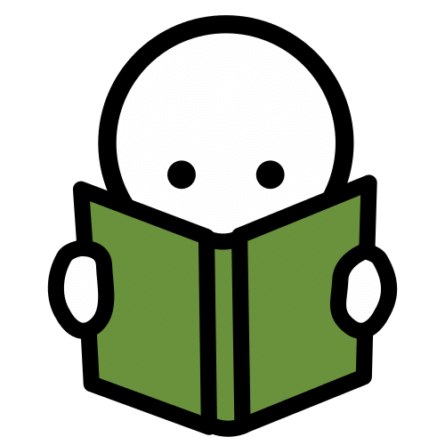
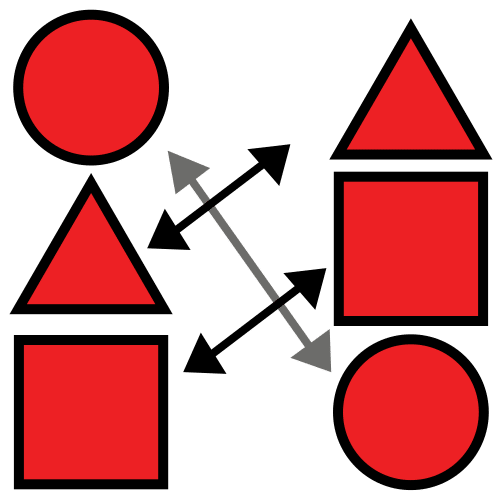
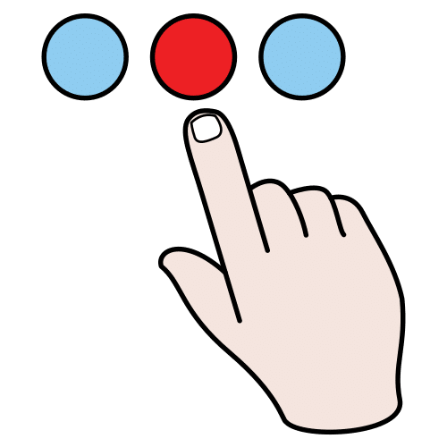

Lectura · Para toda la clase
Frase
y dibujo
Leo la frase entera y busco su dibujo. Tres niveles, de 2 a 8 palabras, y un símbolo detrás para comprobarlo.
Pictogramas: Sergio Palao. ARASAAC (Gobierno de Aragón). CC BY-NC-SA.
Licencia CC BY-NC-SA 4.0
ideducando.es
Tres niveles2 a 8palabras
Antes de empezar
De un vistazo
Cada frase tiene su dibujo. El peque lee la frase entera, busca el dibujo que dice lo mismo y lo pone al lado en el
tablero. Después da la vuelta al dibujo: si el símbolo de detrás es el mismo que el de la frase, ha acertado. Son 36
parejas en tres niveles, para 5 años de Infantil y para 1.º y 2.º de Primaria.
Así se comprueba
El símbolo va escondido detrás del dibujo: así nadie empareja por el símbolo sin leer.
Tres grupos de cuatro parejas en cada nivel
Las frases de un grupo se parecen a propósito: así hay que leerlas enteras. Empieza por uno. En las hojas van en este
orden.
| Nivel |
Grupo A |
Grupo B |
Grupo C |
Primero la frase, después el dibujo. Que lea la frase entera antes de mirar los dibujos, sin
adivinar por la primera letra ni por el dibujo. La guía de la página explica cómo
enseñarlo y cómo retirar la ayuda.
Leo y empareja
Me llamo:
Nivel:
Pictogramas: Sergio Palao. ARASAAC (Gobierno de Aragón). CC BY-NC-SA. La flecha y los iconos, de IdEducando.
Tarjetas en blanco · Seis frases y seis dibujos
Corta Dobla hacia atrás
Antes de plastificar, rodea la forma del nivel, escribe la frase y haz su dibujo. Dibuja el mismo símbolo en la frase
y en la pestaña: un triángulo, una gota o una nube. Si pegas pictogramas de ARASAAC, cítalos igual.
Para el adulto · Una hoja por peque
Registro de lectura de frases
La escalera de las ayudas
← Más ayudaMás autonomía →
Cuándo subir un peldaño: cuando acierte las cuatro parejas de un grupo con esa ayuda dos días
seguidos. Si falla más de una, vuelve al peldaño anterior sin darle importancia. Es una propuesta de IdEducando:
ajústala a cada peque.
¿Dónde se equivoca? Apunta su letra
| Día |
Nivel y grupo |
Aciertos (de 4) |
Ayuda (A a E) |
¿Dónde se equivoca? |
Qué ha hecho bien |
Solo iniciales, sin el diagnóstico. Guarda el registro en el centro y no le hagas fotos con tu móvil.
Guía para el docente
Frase y dibujo: cómo enseñar a leer la frase entera
Este material sirve para leer frases cortas y comprobar que se han entendido: cada frase tiene su dibujo, hecho con
pictogramas de ARASAAC. Es para 5 años de Infantil y para 1.º y 2.º de Primaria, con toda la clase. Ayuda sobre todo
al alumnado con trastorno del desarrollo del lenguaje (TDL), discapacidad intelectual, trastorno del espectro del
autismo (TEA) o dislexia.
Por qué frases con su dibujo
-
Leer y entender son dos cosas. Para comprender lo que lee, un niño necesita leer bien las palabras
y comprender el lenguaje. En un estudio con 198 niños y niñas seguidos desde los 7 años y medio, esas dos capacidades
explicaron casi todas las diferencias en su comprensión lectora inicial (Lervåg, Hulme y Melby-Lervåg, 2018). Catts,
Adlof y Ellis Weismer (2006) encontraron alumnado que leía bien las palabras y comprendía mal el lenguaje, y alumnado
con el perfil contrario. Las tarjetas ayudan a ver cuál es el caso: si lee bien la frase y elige mal el dibujo, mira la
comprensión; si no llega a leerla, trabaja la lectura de palabras.
-
El TDL. Así se llama hoy el trastorno del lenguaje que no se explica por otra causa conocida (Bishop y
otros, 2017). Antes se llamaba trastorno específico del lenguaje (TEL). Este alumnado suele comprender peor que sus
compañeros las frases que oye, y la memoria parece influir en esa dificultad (Montgomery, Gillam y Evans, 2016). Por
eso las frases empiezan cortas y crecen poco a poco.
-
Leer bien no asegura entender. En un estudio con 41 niños y niñas con TEA, en conjunto leían las
palabras como se espera para su edad y comprendían peor el texto, aunque había perfiles muy distintos (Nation y otros,
2006). El dibujo comprueba lo que ha entendido, aunque lea la frase en voz alta sin un fallo.
-
Lo que pide el currículo. En el primer ciclo de Primaria, la comprensión se trabaja «mediante la
lectura silenciosa y en voz alta, acompañada de imágenes», y se comparan y transforman «palabras y enunciados» (Real
Decreto 157/2022). En Infantil, a la lectura se acerca jugando y disfrutando, y la adquisición del código escrito «no
es un objetivo que se deba alcanzar en esta etapa» (Real Decreto 95/2022). Con 5 años, el nivel 1 es un reto para quien ya
lee, y nunca una obligación.
Cómo enseñar a leer la frase entera
-
Primero la frase, después los dibujos. La guía de lectura inicial de Foorman y otros (2016)
desaconseja que el alumnado adivine las palabras por la primera letra o por el dibujo, porque no le servirá con textos
más difíciles. Que lea la frase entera y después busque.
-
Un dedo para cada palabra. Debajo de cada palabra hay una rayita. Que pase el dedo por ella al leerla,
hasta el punto de color: ahí acaba la frase. Hacer coincidir cada palabra que dice con cada palabra escrita es un paso clave al
empezar a leer (Flanigan, 2007).
-
Si se equivoca, no le des la respuesta. Espera un poco y pídele que lea otra vez la frase: «¿Tiene
sentido con este dibujo?». Es lo que propone la misma guía para que aprenda a corregirse solo (Foorman y otros, 2016,
págs. 34 y 35).
-
¿Cómo lo sabes? Al acertar, pregúntale qué palabra le ha dicho cuál era el dibujo. En el nivel 3,
poned las dos frases de la pareja juntas y buscad la palabra que cambia. El Diseño Universal para el Aprendizaje (DUA)
propone resaltar lo que es clave (CAST, 2024, consideración 3.2).
-
Con el cuerpo y con objetos. Antes del nivel 3, haced las frases: un peluche en la cama y debajo de
la cama, un vaso lleno y uno vacío. Así la palabra pequeña («en», «debajo», «con», «sin») se ve y se toca.
Cómo graduar la ayuda
El DUA propone ajustar el reto y el apoyo, y dar apoyos graduados mientras se practica (CAST, 2024, consideraciones 8.2
y 5.3). La escalera del registro (página ) va de más ayuda a más autonomía:
Retira la ayuda poco a poco y espera a que pruebe solo: en lugar de darle la palabra, pregúntale «¿Qué puedes
probar?» (Foorman y otros, 2016, pág. 34). El modelado, las ayudas que se van retirando y los apoyos visuales están
entre las prácticas con evidencia para el alumnado con TEA (Hume y otros, 2021). El símbolo de detrás le da una
respuesta inmediata que puede usar solo (CAST, 2024, consideración 8.5).
Para cada necesidad
TDL
- Antes de leer, dile tú la frase y que la repita. Después, que la lea.
- Acompaña las palabras pequeñas con un gesto: «debajo», «dentro», «con», «sin».
- Empieza por el nivel 1 aunque lea bien: primero se entiende la frase corta.
Discapacidad intelectual
- Dos parejas a la vez, y después tres. Repetid el mismo grupo varios días.
- Haced antes la frase con objetos de verdad y después con el dibujo.
- Elige frases de su día a día con las tarjetas en blanco.
TEA
- Siempre el mismo tablero y los mismos pasos. Dile cuántas parejas hay y cuándo acaba.
-
Si las tarjetas se le mueven y eso le altera, pon velcro: rugoso en los huecos del tablero y suave detrás de las
tarjetas, como en el resto de materiales de IdEducando.
Dislexia
- Que lea en voz baja o a solas, sin público y sin reloj.
- Si se pierde en la línea, una tira de cartulina debajo ayuda.
- Valora que entienda la frase aunque la lea despacio.
En clase
-
En parejas: uno lee la frase en voz alta y el otro busca el dibujo. Después cambian. El DUA propone
aprender en colaboración (CAST, 2024, consideración 8.3).
-
Con toda la clase: enseña los dos dibujos de una pareja del nivel 3, lee una de las frases y que cada
cual señale el suyo. ¿Qué palabra lo ha decidido?
-
Para escribir: en 2.º, cada peque escribe una frase en una tarjeta en blanco y hace su dibujo. Otra
pareja la lee y la empareja.
Con otros materiales de IdEducando
Los dibujos del tiempo del nivel 1 son los mismos del panel de
Rutinas de invierno en el cole: el
peque ya los conoce. Para trabajar antes los sonidos y las sílabas, usa
El tren de las sílabas. Si quiere leer
algo más largo,
Mi primer día en el cole nuevo
es un cuento en lectura fácil.
Para las familias
Frase y dibujo, también en casa
En clase leemos frases cortas y buscamos su dibujo, como «El gato duerme debajo de la cama». Así aprendemos a leer la
frase entera, hasta el punto, y a entender lo que dice: el dibujo ayuda a comprobarlo. Sirve a todos los niños y niñas,
también a quienes tienen más dificultades con el lenguaje o con la lectura.

Cuando lee en casa
- Que señale cada palabra con el dedo mientras la lee.
- Si se equivoca, no le digáis la respuesta. Decid: «Léela otra vez. ¿Tiene sentido?».
- Mejor 10 minutos con ganas que media hora con prisas. Celebrad el esfuerzo.

Cuatro juegos para casa

Para probar juntos
Frase y dibujo. IdEducando, noviembre de 2026. Licencia CC BY-NC-SA 4.0. Los símbolos pictográficos
utilizados son propiedad del Gobierno de Aragón y han sido creados por Sergio Palao para ARASAAC
(https://arasaac.org), que los distribuye bajo Licencia Creative Commons BY-NC-SA.
Fuentes y créditos
De dónde sale este material
Frase y dibujo: leo y empareja. Equipo IdEducando, noviembre de 2026.
ideducando.es/material-gratuito/frase-y-dibujo. Fuentes consultadas el 17/11/2026.
Comprender lo que se lee
-
Lervåg, A., Hulme, C. y Melby-Lervåg, M. (2018). Unpicking the developmental relationship between oral language
skills and reading comprehension: It's simple, but complex. Child Development, 89(5), 1821-1838. DOI:
10.1111/cdev.12861
-
Catts, H. W., Adlof, S. M. y Ellis Weismer, S. (2006). Language deficits in poor comprehenders: A case for the simple
view of reading. Journal of Speech, Language, and Hearing Research, 49(2), 278-293. DOI:
10.1044/1092-4388(2006/023)
-
Foorman, B. y otros (2016). Foundational skills to support reading for understanding in kindergarten through 3rd
grade (NCEE 2016-4008). National Center for Education Evaluation and Regional Assistance, Institute of
Education Sciences, U.S. Department of Education. Recomendación 4, págs. 32 a 37. ies.ed.gov
-
Flanigan, K. (2007). A concept of word in text: A pivotal event in early reading acquisition. Journal of
Literacy Research, 39(1), 37-70. DOI: 10.1080/10862960709336757
TDL y TEA
-
Montgomery, J. W., Gillam, R. B. y Evans, J. L. (2016). Syntactic versus memory accounts of the sentence
comprehension deficits of specific language impairment: Looking back, looking ahead. Journal of Speech,
Language, and Hearing Research, 59(6), 1491-1504. DOI: 10.1044/2016_JSLHR-L-15-0325
-
Bishop, D. V. M., Snowling, M. J., Thompson, P. A., Greenhalgh, T. y CATALISE-2 consortium (2017). Phase 2 of
CATALISE: a multinational and multidisciplinary Delphi consensus study of problems with language development:
Terminology. Journal of Child Psychology and Psychiatry, 58(10), 1068-1080. DOI: 10.1111/jcpp.12721
-
Nation, K., Clarke, P., Wright, B. y Williams, C. (2006). Patterns of reading ability in children with autism
spectrum disorder. Journal of Autism and Developmental Disorders, 36(7), 911-919. DOI:
10.1007/s10803-006-0130-1
-
Hume, K. y otros (2021). Evidence-based practices for children, youth, and young adults with autism: Third generation
review. Journal of Autism and Developmental Disorders, 51(11), 4013-4032. DOI: 10.1007/s10803-020-04844-2
Currículo y DUA
-
Real Decreto 157/2022, de 1 de marzo, por el que se establecen la ordenación y las enseñanzas mínimas de la Educación
Primaria. Boletín Oficial del Estado (BOE) n.º 52, de 2 de marzo de 2022, anexo II, Lengua Castellana y Literatura:
competencia específica 4 (pág. 24460), criterios del primer ciclo 4.1 y 9.1 (págs. 24464 y 24465) y saberes básicos
(págs. 24465 y 24466).
-
Real Decreto 95/2022, de 1 de febrero, por el que se establece la ordenación y las enseñanzas mínimas de la Educación
Infantil. Boletín Oficial del Estado (BOE) n.º 28, de 2 de febrero de 2022, anexo II, área Comunicación y
Representación de la Realidad (págs. 14587, 14589 y 14593).
-
CAST (2024). Las Directrices del Diseño Universal para el Aprendizaje, versión 3.0, consideraciones 3.2,
5.3, 8.2, 8.3 y 8.5. udlguidelines.cast.org/es
Pictogramas, dibujos y licencia
Los pictogramas son de ARASAAC, el Centro Aragonés para la Comunicación Aumentativa y Alternativa. Su licencia pide
citar este texto: «Los símbolos pictográficos utilizados son propiedad del Gobierno de Aragón y han sido creados por
Sergio Palao para ARASAAC (https://arasaac.org), que los distribuye bajo Licencia Creative Commons BY-NC-SA». Los
dibujos de las tarjetas se han hecho juntando pictogramas, y algunos están girados o más pequeños. Las zetas del sueño,
las olas, las rayas de correr, los símbolos y el diseño son de IdEducando. Con pictogramas de ARASAAC, este material
no se puede vender: es gratis y lo será siempre. Licencia CC BY-NC-SA 4.0: puedes copiarlo y adaptarlo citando a
IdEducando, sin fines comerciales y con la misma licencia.